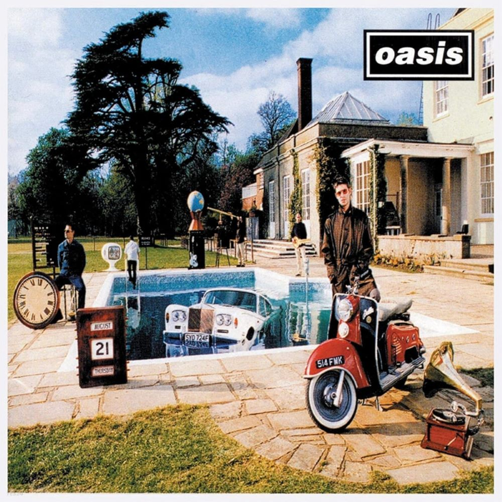

Oasis's third studio album, "Be Here Now," released in 1997, is a monumental work that captures the band at the zenith of their fame and the height of Britpop's cultural impact. Following the massive success of their first two albums, "Be Here Now" was highly anticipated, and while it received mixed critical reviews upon release, it remains an important chapter in the band's discography.
The album is known for its extravagance, both in terms of its production and its ambitious, sprawling sound. Clocking in at over 70 minutes, "Be Here Now" features extended tracks with layered instrumentation, characteristic of Noel Gallagher's approach to songwriting and production. The lead single, "D'You Know What I Mean?" with its swirling guitars and expansive sound, exemplifies the album's sonic grandiosity.
While the album received criticism for its excesses, tracks like "Stand by Me" and "Don't Go Away" showcased Oasis's ability to craft emotionally resonant ballads. "All Around the World," the album's closing track, is particularly notable for its orchestral arrangement and extended length, making it one of the longest singles in UK chart history.
"Be Here Now" also reflects a period of significant change within the band, with the departure of drummer Tony McCarroll and the inclusion of Alan White. The album's recording sessions were marked by a hedonistic atmosphere, mirroring the excesses of the Britpop era.
Despite the initial critical reception, "Be Here Now" debuted at number one on the UK Albums Chart and became the fastest-selling album in the UK at the time. While it may not have achieved the same level of enduring acclaim as their first two albums, "Be Here Now" is a testament to Oasis's unapologetic approach to rock and their ability to capture the zeitgeist of the late '90s. In recent years, there has been a reassessment of the album, with some critics and fans recognizing its significance and unique place in the band's evolution.

Oasis 3rd Album Be Here Now
 ?
?